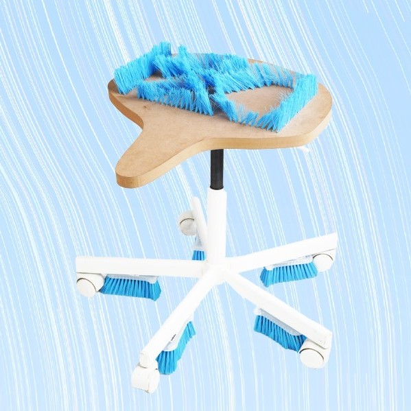
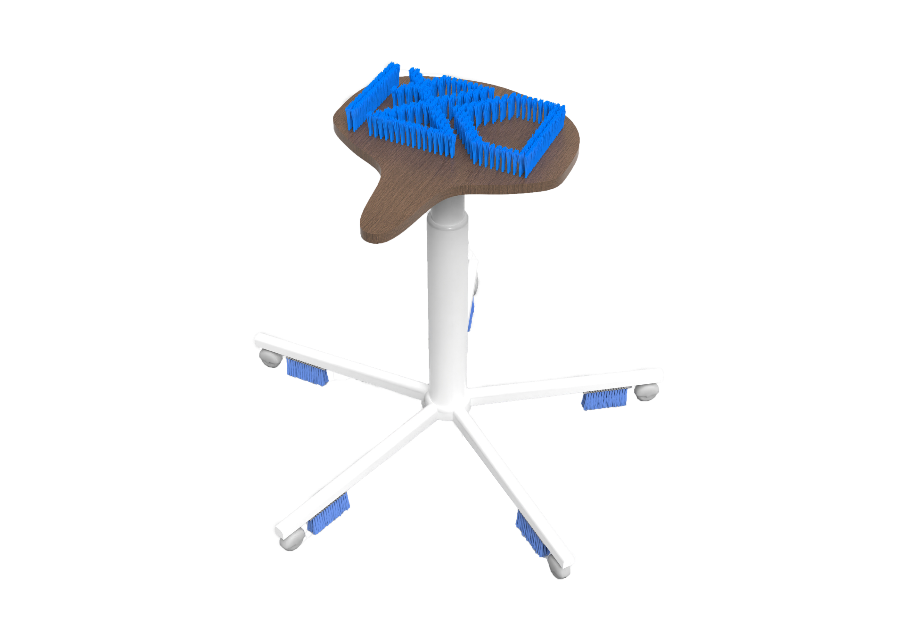

POPKEA: ORIGAMI


凳子不仅可以用来坐,在我的设计中，将凳子与刷子结合，赋予凳子新的功能——清洁，赋予刷子新的功能——充当坐面。
一根刷毛是很软的，很小的力就可以使其弯曲，但是数百根刷毛的弹力之和，足以支撑起一个正常体重的人。凳面以密度板为基础，利用CNC在版面打出孔，将刷毛塞入孔内并用热熔胶固定，人坐下时可以亲切感受到刷毛顽强的弹力。凳腿与刷子用螺丝钉连接，在椅子滑动时可以顺路带走地上的毛发。